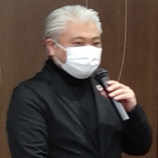
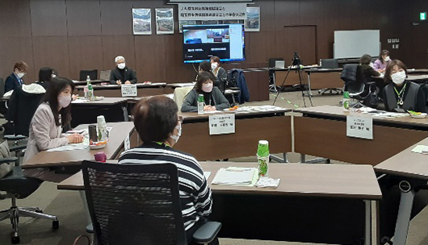
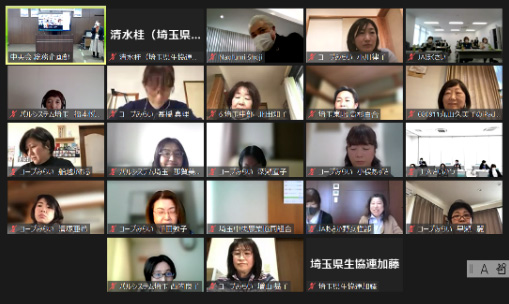

JA埼玉県女性組織協議会と埼玉県生協連第28回早春交流会報告
対面とオンラインで「子ども食堂ってなんだろう」をテーマに学び、交流しました
JA埼玉県女性組織協議会と埼玉県生協連の交流会は、男女共同参画の推進、協同組合間交流、地域でのつながりを強め、豊かな地域社会づくりのきっかけとすることを目的に、1996年から実施され、今年で28回目を迎えました。
2023年3月6日（月）10時より、JAいるま野本店会議室24人、およびZoomによるオンライン45人、計69人が参加しました。
【参加】JA埼玉県女性組織協議会6組織・41人（JAさいたま女性部・JAあさか野女性部各2人、JA埼玉中央女性部・JAいるま野女性部各6人、JAほくさい女性部14人、JAさいかつ女性部7 人、JA埼玉県中央会4人）、埼玉県生協連3生協・28人（コープみらい18人、パルシステム埼玉4人、医療生協さいたま2人、生協連4人）合計69人

講師
東海林尚文さん
東海林尚文さん
JA埼玉県女性組織協議会会長の森操さん、副会長の田中あきえさん、埼玉県生活協同組合連合会常務理事大久保美紀さんからあいさつと活動報告した後、（一社）埼玉県子ども食堂ネットワーク代表理事の東海林尚文さんから、「子ども食堂ってなんだろう？」と題して、講演いただきました。全国の子ども食堂の状況や東海林さんが活動されている富士見みんなのプロジェクトでの取り組みの報告から、子ども食堂とは子どもの貧困対策のためだけではなく多様な役割をもっており、家庭でも学校でもない第三の居場所として、それぞれの地域で人と人がつながりあって支えあえる場所、地域のみんなで子どもたちを見守れる場所「地域のオアシス」であると話されました。
講演後、講演を受けての意見交換会を会場・オンライン各4グループに分かれて行い、交流を深めました。
- 
- 